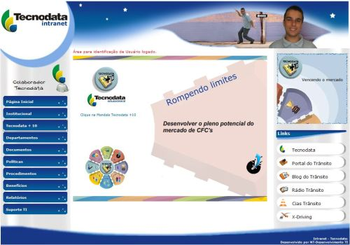

Ao abrir o navegador de internet, a página inicial é a Intranet da Tecnodata. Através dela, pode-se verificar diversos procedimentos e relatórios internos, tornando possível conhecer um pouco melhor o funcionamento e o desempenho das demais áreas da empresa.
O espaço da Intranet está disponível a todos os funcionários da empresa, tanto para consulta quanto para divulgação de procedimentos e relatórios internos.
